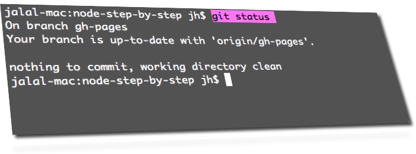
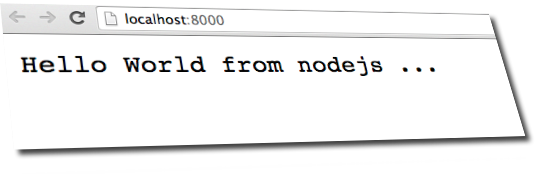

Grundlæggende git repository og nodejs programmering
Før du start skal du tage en kopi (klone) af kildekoden fra github
Dette kan gøres med en terminal (powershell-terminal, DOS-terminal, mac-terminal):
$ git clone https://github.com/Jalalhejazi/node-step-by-step.git
$ cd node-step-by-step/
$ git status

step00
Dette er meget grundlæggende basis niveau, hvor alle kan være med :-)
venligst være sikker på, at står på step 00
$ git checkout step00
efter du har lavet ændringer til server.js filen skal du teste med node:
node server.jsEfter dine ændringer så er din version af server.js forskellige fra github-versionen
Du kan altid teste med kommandoen:
$ git statusinden du fortsætter med næste step, skal du første gemme de ændringer du har lavet:
$ git commit -am "ok"$ git status
Hvor mange branches er der på serveren?
$ git branch -r$ git branchNu er det på tide at skifte over til step01
step01
Vi ønsker at downloade en ny version fra serveren:
$ git checkout step01$ git status$ node server.jsDet kan du ændre på i server.js efter behov
start din browser med denne link: http://localhost:8000 
Der er ingen kode ændringer til denne branch
Men så har du jo også brugt git
Det du har lært indtil nu:
- git clone
- git status
- git branch -r
- git branch
- git chechout
- git commit -am "OK"